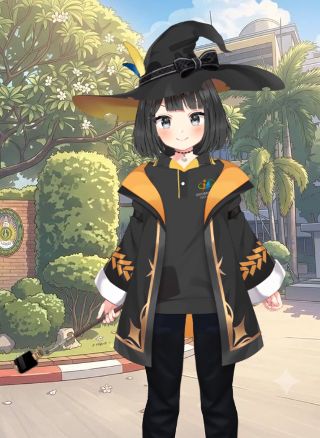

ผู้ช่วยเสมือนจริงประจำสาขาเทคโนโลยีสารสนเทศ มหาวิทยาลัยราชภัฏนครปฐม

ที่ผ่านมา การนำเสนอข้อมูลของสาขา IT มักขาดความน่าสนใจ และคนทั่วไปมองว่าเนื้อหาหรือศัพท์เทคนิคเป็นเรื่องยาก จากปัญหาดังกล่าว ผู้จัดทำจึงได้แรงบันดาลใจจากเทคโนโลยี AI VTuber แบบ Open-source
จึงได้นำแนวคิดนี้มาสร้าง 'มาลี' AI VTuber ที่ขับเคลื่อนด้วยโมเดลภาษาขนาดใหญ่ (LLM) โดยเน้นฝึกข้อมูลเฉพาะทางด้าน IT พื้นฐาน และข้อมูลของสาขา IT มหาวิทยาลัยราชภัฏนครปฐม เพื่อใช้เป็นนวัตกรรมใหม่ในการสื่อสารและแก้ปัญหาข้างต้น
กำหนดให้ AI รับบท "มาลี" ผู้ช่วยสาขาเทคโนโลยีสารสนเทศ ที่มีนิสัยสดใส เป็นมิตร และใช้คำลงท้ายเป็นธรรมชาติ
สคริปต์จำลองการคุยระหว่างพิธีกรกับมาลีสำหรับสาธิตบนเวที โดยใช้เป็นตัวอย่าง (Few-Shot Prompting)